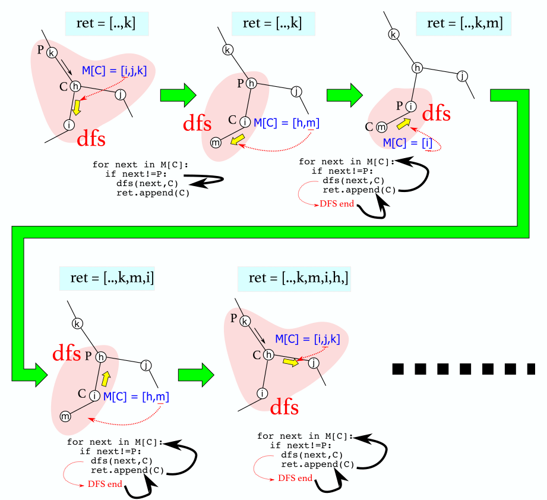

Eular Tour
以下の典型問題のような方法でグラフの全ての地点を訪れる方法をオイラーツアーといい、 典型問題の１種に挙げられている。
典型問題
- 全ての番号の付いた地点を、以下のルールで訪れたい
- 1.最初の地点に最後戻ってくる。
- 2.まだ訪れたことがない地点があれば、その中で最も番号の小さい地点を訪れる。
- 3.2において、他の地点が全て訪れた場所であった場合は、直前に訪れた場所に戻る。
など
実際のプロコンでの問題例
考え方・実装
dfsで解くことができる。sys.setrecursionlimit を忘れないようにする。 以下、道がN本あり、そのそれぞれの端点がa,b（数字）であるとして変数Mに
N=int(input())
M=[[] for i in range(N)]
for i in range(N-1):
a,b=map(int,input().split())
M[a-1].append(b-1)
M[b-1].append(a-1)
と入力されたと仮定してこの問題を解いていく。
実装
以下のように実装する。
for i in range(N):M[i].sort()
ret = list()
'''
C:current node
P:previous node
'''
def dfs(C,P):
ret.append(C) # set current path to the answer
for next in M[C]:
if next!=P:
dfs(next,C)
ret.append(C)
dfs(0,-1)
ret = [a + 1 for a in ret]
print(*ret)
イメージ
末端まで行ったり、接点が全て行ったことがある状態になるとdfsが終わりその点が 航路に追加されて、次の道(for next in M[C]のnextが一つ次になる)に進む。 折り返しや、直前の道を覚えておく変数はこの理屈だと必要ない。（dfsが終わると自動で一つ手前のdfsに戻るため） 